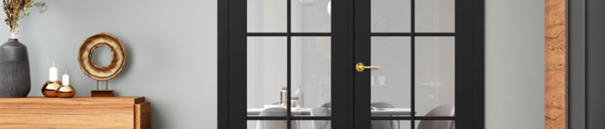
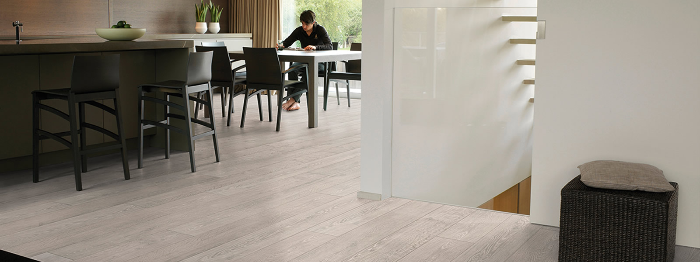
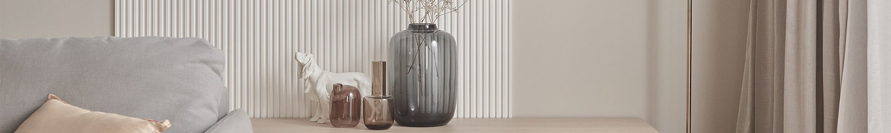
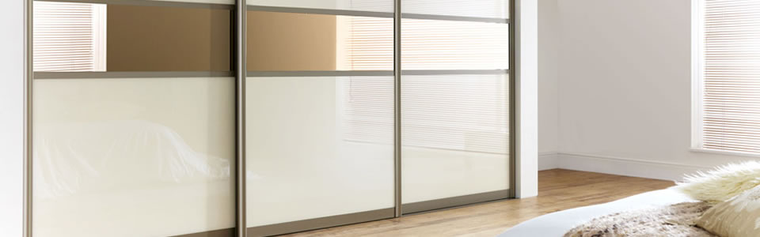
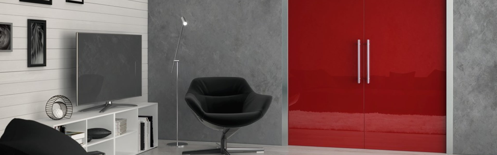
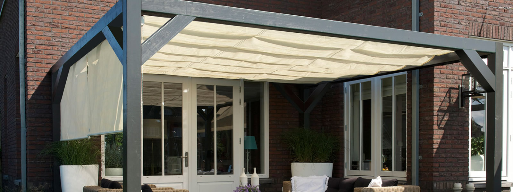
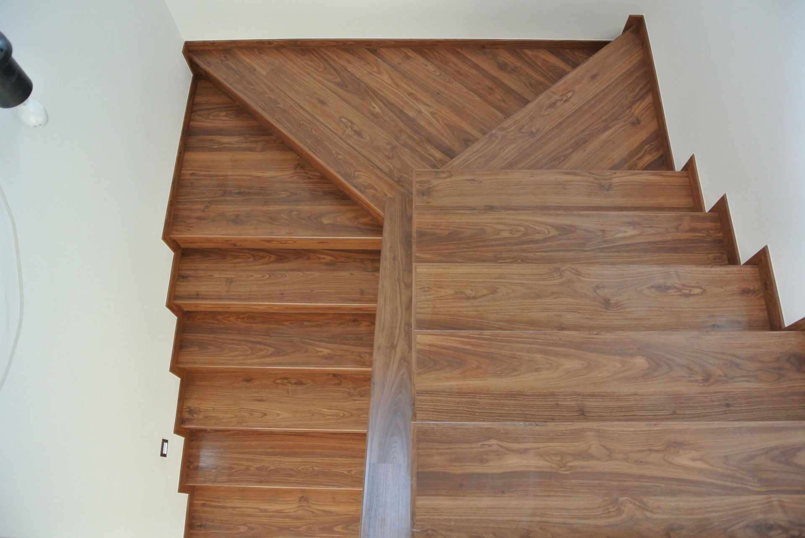
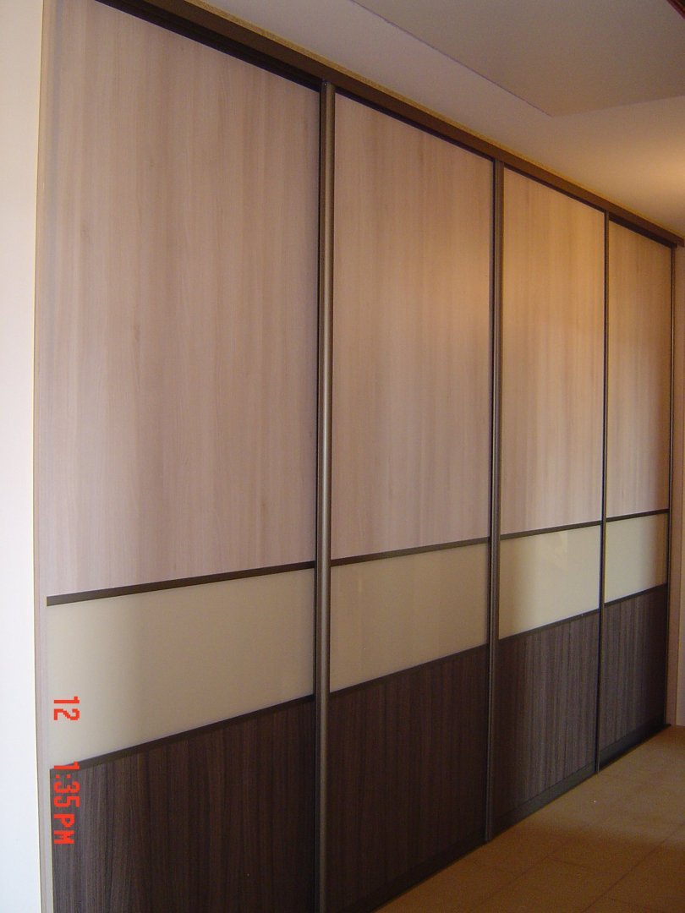
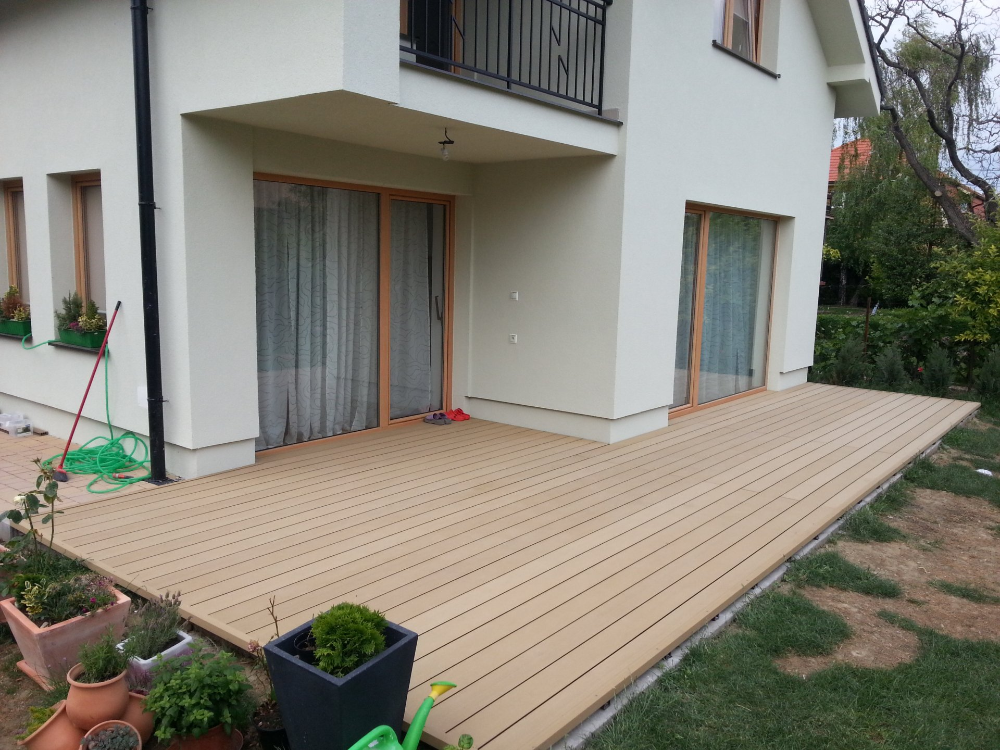

Dvere a zárubne
Interiérové, vchodové, posuvné aj technické dvere od viacerých výrobcov.

Interiérové štúdio Sereď a Galanta
Vyberte si riešenie pre byt, dom alebo pracovný priestor na jednom mieste — od dverí a podláh po obklady, skrine a tienenie.
IN-DOM
IN-DOM je interiérové štúdio s predajňami v Seredi a Galante. Ponuku tvorí viacero kategórií vybavenia interiéru a exteriérového tienenia.
V návrhu odporúčame začať potrebou zákazníka a vhodné produkty či značky vybrať až následne.
Ponuka
Jednotlivé prvky môžete vyberať samostatne alebo ich zladiť v rámci jedného interiéru.
Interiérové, vchodové, posuvné aj technické dvere od viacerých výrobcov.

Laminátové, vinylové a drevené riešenia v rôznych dekoroch a vlastnostiach.

Lamelové panely pre zvýraznenie steny alebo rozdelenie priestoru.

Úložné riešenia pre štandardné, atypické aj podkrovné priestory.

Riešenie pre posuvné dvere, ktoré pomáha šetriť miesto.

Plachty, rolety a drevené či hliníkové pergoly z ponuky IN-DOM.

Pôvodný web prezentuje aj obklady schodov, terasy a nerezové zábradlia.
Prečo IN-DOM
Návrh stavia dôveryhodnosť na tom, čo možno overiť priamo z ponuky firmy.
Dvere, podlahy, obklady a úložné riešenia môžete vyberať v jednom štúdiu.
Web uvádza značky ako ERKADO, PORTA, Quick-Step, EGGER, KAINDL, JAP a ECLISSE.
Produkty a možnosti môžete konzultovať v predajni v Seredi alebo Galante.
Zverejnené realizácie
Fotografie pochádzajú z galérie realizácií na pôvodnom webe IN-DOM.


Dôveryhodnosť
Pôvodný web uvádza široký výber dodávateľov. Konkrétnu dostupnosť a vhodnosť produktu si overte pri konzultácii.
Facebook je jediný sociálny profil, na ktorý aktuálny web odkazuje platnou adresou. Aktivitu profilu si môžete overiť priamo na platforme.
Časté otázky
IN-DOM uvádza predajne na Cukrovarskej 150 v Seredi a v OC Jaspark v Galante. Pred návštevou odporúčame overiť dostupnosť konkrétnej vzorky telefonicky.
Web prezentuje širokú ponuku pre viac častí interiéru. Rozsah poradenstva a prípadného zamerania je potrebné potvrdiť priamo s predajňou.
Kontaktujte zvolenú predajňu telefonicky alebo e-mailom a uveďte, čo zariaďujete. Formulár nižšie je návrh budúcej konverznej cesty a zatiaľ nie je napojený na odosielanie.
Kontakt
Vyberte si najbližšiu predajňu alebo pripravte nezáväzný dopyt.
Cukrovarská 150, 926 01 Sereď
0917 745 111 · sered@in-dom.sk
Po–Pi 09:00–17:00 · So 09:00–12:00
OC Jaspark, 914 01 Galanta
0917 132 958 · galanta@in-dom.sk
Po–Pi 09:00–17:00